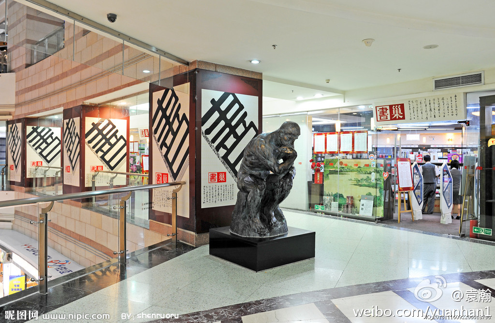

姣姣起床后就大叫：妈妈给我穿衣服！。我：自己穿！。姣姣：春节要妈妈穿衣服～。我：春节你已经挤到爸妈床上睡了这么长时间，谁都睡不好，再这么赖，今晚就睡你的小床！。姣姣：不要不要～。我：那自己穿衣服！。姣姣：好！
外企出来的都有些道德洁癖，同意你的看法。但这种诈骗手段在中国经常被当作样板效仿。//@邹勇_Colin:难道这不是变相诈骗？//@思想聚焦:转发微博@袁瀚老帐号:【作家的“经济头脑”】英国著名小说家毛姆成名前，生活很贫困。他写了一部很有价值的书，但出版后无人问津。于是毛姆在各大报刊上登了一则征婚启事：“本人是个年轻又有教养的富翁，希望能和毛姆小说中女主角完全一样的女性结婚。”几天后，全伦敦书店中毛姆的书销售一空！ 
@黄西Joe_Wong 的笑话是要想一下才会笑的，被称为高智商的人喜欢的笑话。他在美国记者年会上能一泡而红，有一个原因他笑话的特点与听众层次很契合。微博上@到哪里都是主场 的段子也有这个特点。这两人有个共同点是都博士毕业。